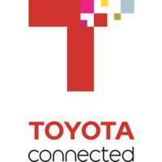

ABOUT ME
Results-oriented data/business analyst with a demonstrated history of elevating company revenue, optimizing operations, and providing actionable insights through advanced analytics tools and machine learning techniques. Passionate about uncovering insights through analytics and visualization. Eager to learn and teach, turning raw data into meaningful stories. Ready to share the power of data with others.

Jun 2023 - Apr 2024Extracted data from AWS Redshift using boto3,pandas
CTEs
Retained ~2.5k lapsing customers by identifying high-risk customers based on their Lifetime Value (LTV)
Calculated using BG/NBD model in Python and introducing subscription offers and targeted emails
Boosted social media by 35% with advanced analytics.
Analyzed demographics, insurance policies for customers swinging across different cohort groups every month
Developed 5+ tableau dashboards (Sankey charts) and induced retention strategies
Toyota Connected North America. (Dallas, Texas)
Data Science AnalystJun 2023 - Apr 2024
CTEs

University of Texas at Dallas
Masters in Business AnalysisScholar Distinction
Aug 2021 - May 2023
Lexis Nexis Risk Solutions (Alpharetta, Georgia)
Data Analyst InternMay 2022 - Aug 2022

Tech Mahindra (Mumbai,India)
Data AnalystDec 2018 - Jul 2021
IIIT, Bhubaneshwar
Bachelors in Computer ScienceAug 2017 - May 2021